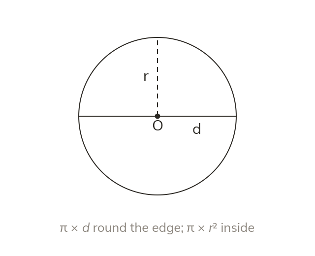

One ratio, two formulas
Every circle's circumference ÷ diameter is the same number, π. So the circumference is π × d and the area is π × r².
Every circle, whatever its size, has a circumference a little over three times its diameter, and that fixed ratio is the number π. So one measurement describes the whole circle: the circumference is π × d, a length round the edge, and the area is π × r², a covering of the inside in square units.